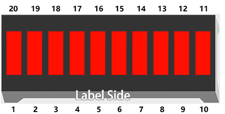
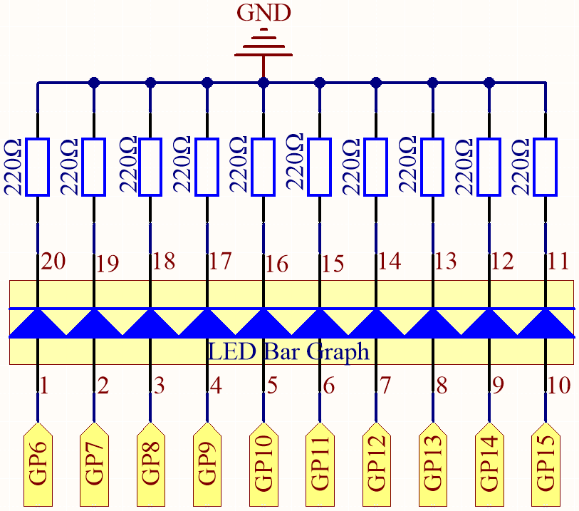

Note
Hello, welcome to the SunFounder Raspberry Pi & Arduino & ESP32 Enthusiasts Community on Facebook! Dive deeper into Raspberry Pi, Arduino, and ESP32 with fellow enthusiasts.
Why Join?
Expert Support: Solve post-sale issues and technical challenges with help from our community and team.
Learn & Share: Exchange tips and tutorials to enhance your skills.
Exclusive Previews: Get early access to new product announcements and sneak peeks.
Special Discounts: Enjoy exclusive discounts on our newest products.
Festive Promotions and Giveaways: Take part in giveaways and holiday promotions.
üëâ Ready to explore and create with us? Click [here] and join today!
2.2 Display the Level¶
The first project is simply to make the LED blink. For this project, let’s use the LED Bar Graph, which contains 10 LEDs in a plastic enclosure, generally used to display power or volume levels.

Schematic

In the LED Bar Graph, there are 10 LEDs, each of which can be controlled individually. Each LED’s anode is connected to GP6*GP15, and its cathode to a 220ohm resistor, and then to GND.
Wiring
{kind=link}
Code
Note
Open the
2.2_display_the_level.pyfile under the path ofeuler-kit/micropythonor copy this code into Thonny, then click “Run Current Script” or simply press F5 to run it.Don’t forget to click on the “MicroPython (Raspberry Pi Pico)” interpreter in the bottom right corner.
For detailed tutorials, please refer to Open and Run Code Directly.
import machine
import utime
pin = [6,7,8,9,10,11,12,13,14,15]
led= []
for i in range(10):
led.append(None)
led[i] = machine.Pin(pin[i], machine.Pin.OUT)
while True:
for i in range(10):
led[i].toggle()
utime.sleep(0.2)
On the LED Bar Graph, you’ll see LEDs lighting up and then turning off in sequence when the program is running.
How it works?
The LED Bar consists of ten LEDs that are controlled by ten pins, which means that we must define these pins.
The process would be too tedious if we defined them one by one. So, here we use Lists.
Note
Python lists are one of the most versatile data types that allow us to work with multiple elements at once, and created by placing elements inside square brackets [], separated by commas.
pin = [6,7,8,9,10,11,12,13,14,15]
A list pin is defined by this line of code, which contains the ten elements 6,7,8,9,10,11,12,13,14,15.
We can use the index operator [] to access an item in a list. In Python, indices start at 0. So, a list having 10 elements will have an index from 0 to 9.
Using this list as an example, pin[0] is 6 and pin[4] is 10.
Next, declare an empty list led that will be used to define ten LED objects.
led = []
Due to the length of the list, which is 0, direct operations on the array, such as printing led[0]**, won’t work. There are new items we need to add.
led.append(None)
As a result of this append() method, the list led has its first item, of length 1, and led[0] becomes a valid element despite its current value of None (which stands for null).
Our next step is to define led[0], the LED connected to pin 6, as the first LED object.
led[0] = machine.Pin(6, machine.Pin.OUT)
The first LED object has now been defined.
As you can see, we have created the ten pin numbers as a list pin, which we can substitute into this line to make it easier to do bulk operations.
led[0] = machine.Pin(pin[0], machine.Pin.OUT)
Use a for statement to have all 10 pins execute the above statement.
import machine
pin = [6,7,8,9,10,11,12,13,14,15]
led= []
for i in range(10):
led.append(None)
led[i] = machine.Pin(pin[i], machine.Pin.OUT)
Use another for loop to make the ten LEDs on the LED Bar switch states one by one.
for i in range(10):
led[i].toggle()
utime.sleep(0.2)
The code is finished by putting the above piece of code in a while loop.
import machine
import utime
pin = [6,7,8,9,10,11,12,13,14,15]
led= []
for i in range(10):
led.append(None)
led[i] = machine.Pin(pin[i], machine.Pin.OUT)
while True:
for i in range(10):
led[i].toggle()
utime.sleep(0.2)